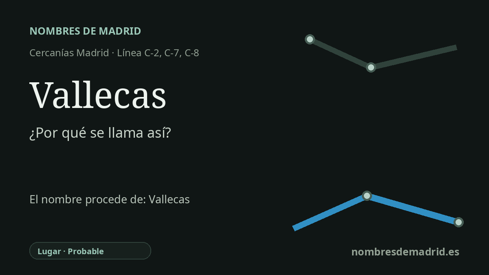

Publicado el · Investigación de Nombres de Madrid · Cómo verificamos cada origen · 9 fuentes consultadas
Respuesta rápida
La estación de Vallecas toma su nombre del área histórica de Vallecas, antiguo municipio independiente al sureste de Madrid. El topónimo aparece como Balecas en 1202; la interpretación mejor apoyada lo relaciona con zonas de valle, mientras que el popular 'Valle de Kas' es una leyenda posterior.
La historia del nombre
La estación de Vallecas toma su nombre de Vallecas, el territorio histórico y antiguo municipio cuyo nombre sigue identificando dos distritos madrileños: Puente de Vallecas y Villa de Vallecas. La parada de Cercanías está junto a Sierra de Guadalupe y da servicio a las líneas C-2, C-7 y C-8, de modo que el nombre ferroviario funciona como puerta de entrada a un topónimo mucho más antiguo, no como una simple descripción moderna.
El nombre es medieval. Un texto transmitido con el Fuero de Madrid de 1202 menciona Balecas, y la historiografía local relaciona esa forma con el carrascal o dehesa de encinas de Balecas. Ese testimonio temprano es especialmente valioso porque demuestra que el nombre existía mucho antes de los barrios actuales, del ferrocarril y de la expansión madrileña del siglo XX.
La explicación etimológica más sólida encontrada en las fuentes disponibles es la atribuida al arabista Federico Corriente. Según esa lectura, Vallecas procedería de una forma del romance andalusí que suele transcribirse ballaykas, con el sentido de 'zonas de valle': una base romance relacionada con el latín vallis, 'valle', más un sufijo atributivo usado en el mundo lingüístico bilingüe del Madrid y el Toledo medievales. Sigue siendo una hipótesis etimológica, pero encaja mejor con la forma antigua Balecas que los relatos anecdóticos posteriores.
Vallecas también conserva etimologías populares muy conocidas. La más famosa habla de un poblador musulmán llamado Kas, que habría dado lugar al supuesto 'Valle de Kas'. Los autores locales rastrean versiones de esa historia en publicaciones de los siglos XIX y XX, pero también señalan que se apoya en la semejanza sonora y en la leyenda, no en una demostración lingüística rigurosa. La teoría de Vallis Egas, o 'valle de Egas', es otra propuesta histórica, aunque hoy suele considerarse menos convincente que la explicación de las zonas de valle.
El nombre de transporte tiene su propia cronología. Ya existía una estación ferroviaria llamada Vallecas desde la época de la línea Madrid-Zaragoza del siglo XIX; la estación actual de Cercanías se desplazó y renovó en torno a la ampliación de la línea 1 de Metro de 1999 para crear el intercambio con Sierra de Guadalupe. En lo administrativo, Vallecas permaneció fuera de Madrid hasta el decreto de anexión del 10 de noviembre de 1950, ejecutado en diciembre de 1950, por lo que el nombre de la estación conserva la memoria de un lugar que fue municipio propio.